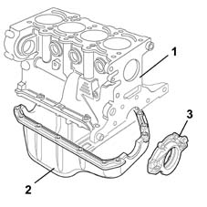
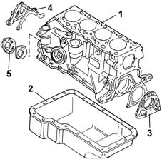
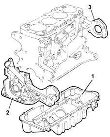

Introduction - CRANKCASE SUMP AND COVERS
- Path
- Descriptions > 10 ENGINE > 1020 CRANKCASE SUMP AND COVERS > Introduction - CRANKCASE SUMP AND COVERS
- Kind
- system description
- Applies to
- engines: 1.2 8v, 1.6 16v, 1.3 JTD 16V, 1.9 JTD 8V, 1.9 DIESEL; all production periods
- Interactive page
- https://sloeber94.github.io/elrnDB-fDbl/en/#/2585385
Applies to: engines: 1.2 8v; all production periods
The sump has the task of housing the engine lubrication oil; it is made from pressed steel and includes the port and plug for draining the oil and the anti-splash barrier.
The seal with the crankcase is ensured by a bead of silicone sealant. The timing side and flywheel side covers guarantee the crankshaft seal and are fixed to the crankcase by bolts.

1, Engine block
2, Oil sump
3, Cover, flywheel side
The oil sump or engine lubricant reservoir is responsible for collecting the lubricant to convey it to the point where the oil pump draws the lubricant, sending it under pressure to the lubrication ducts.
Applies to: engines: 1.6 16v; all production periods
The sump has the task of housing the engine lubrication oil; it is made from pressed steel and includes the port and plug for draining the oil.
The seal with the crankcase is ensured by a bead of silicone sealant. The timing side and flywheel side covers guarantee the crankshaft seal and are fixed to the crankcase by bolts.

1, Engine block
2, Oil sump (lubrication tank)
3, Cover, flywheel side
4, Cover, timing side
5. Auxiliary shaft cover
The oil sump or engine lubricant reservoir is responsible for collecting the lubricant to convey it to the point where the oil pump draws the lubricant, sending it under pressure to the lubrication ducts.
Applies to: engines: 1.9 DIESEL; all production periods
The oil sump is made of aluminium alloy. Its function is to collect oil for lubricating the engine; it is bolted to the cylinder block. The seal on the join is ensured by a bead of silicone sealant.
The covers on the timing gear and flywheel sides comprise oil seals to seal the crankshaft.
The cover on the timing gear side constitutes the mounting for the oil filter, and incorporates the oil pump (see subgroup 1084).

1, Oil sump
2, Crankshaft front cover
3, Crankshaft rear cover
Applies to: engines: 1.9 JTD 8V; all production periods
The oil sump is made of aluminium alloy. Its function is to collect oil for lubricating the engine; it is bolted to the cylinder block. The seal on the join is ensured by a bead of silicone sealant.
The covers on the timing gear and flywheel sides comprise oil seals to seal the crankshaft.
The cover on the timing gear side constitutes the mounting for the oil filter, and incorporates the oil pump (see subgroup 1084).
1, Oil sump
2, Crankshaft front cover
3, Crankshaft rear cover